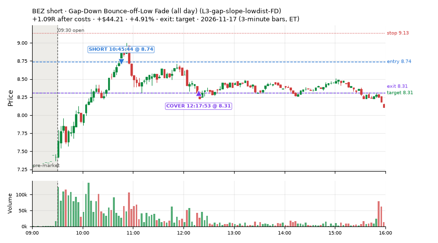
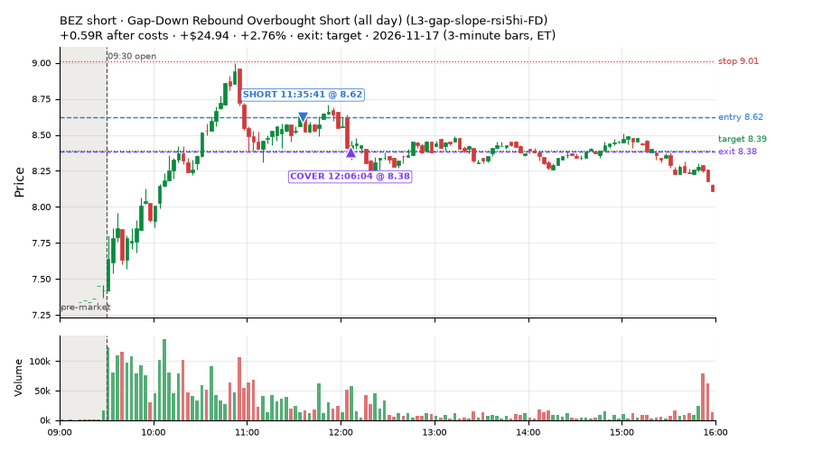
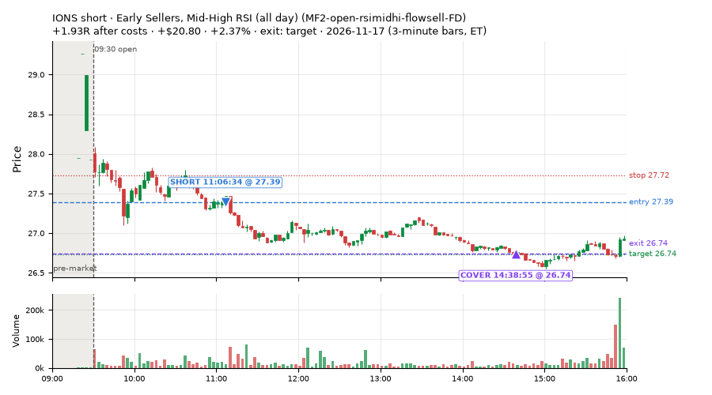
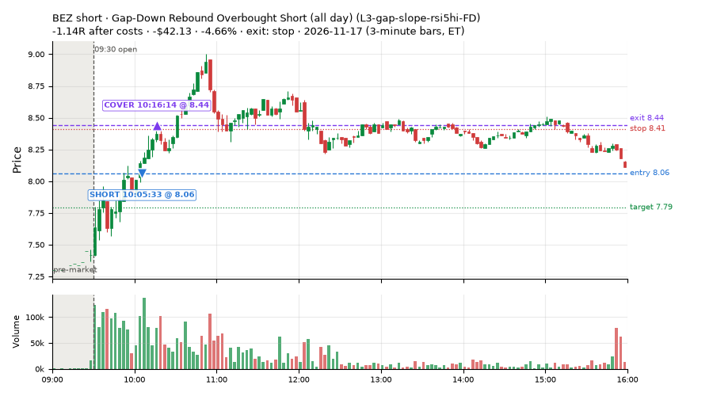
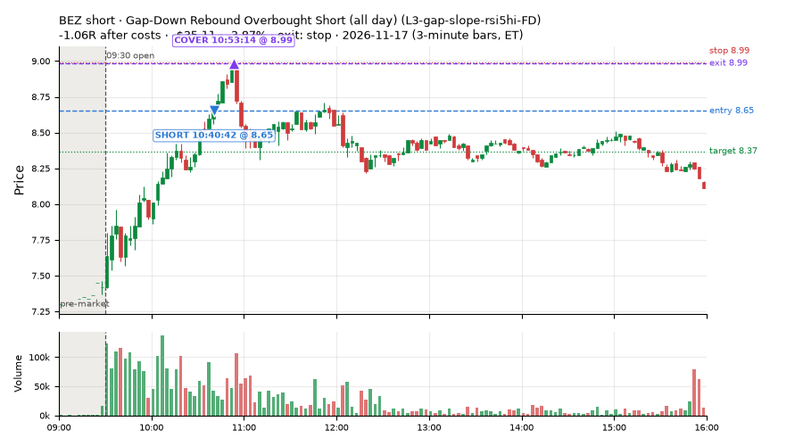
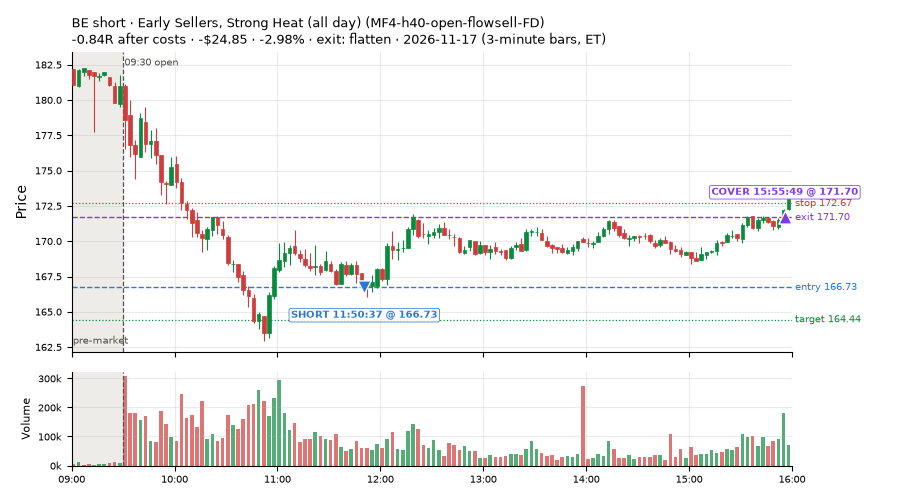
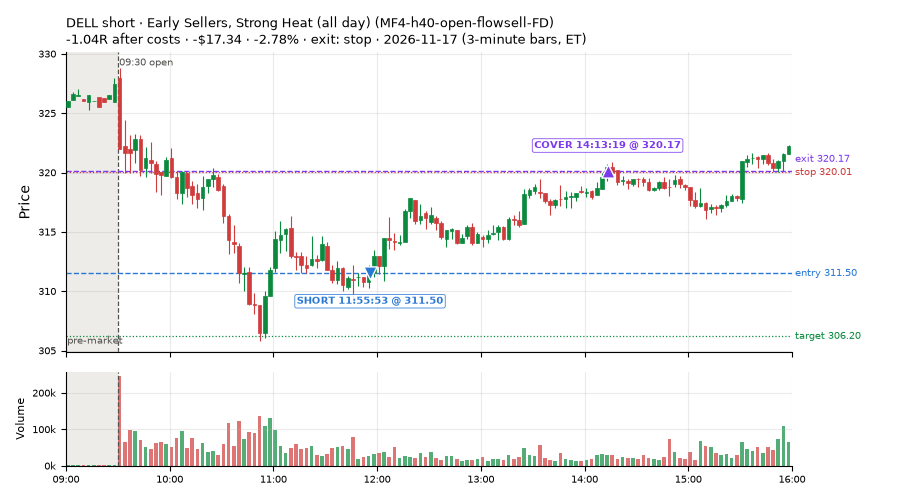
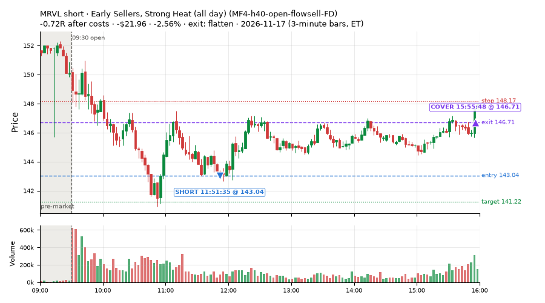

120 trades · win rate 37% · P/L $-522.83
PROBATION: no live setup has passed both locked test periods. 10 owner-directed setups added 2026-10-08 (MarcoFlow top 5 + 5 new), untested live. RW6G1 (RW6 + VWAP band guard) added 2026-10-09, probation.

| Symbol | Setup | Side | In | Out | Entry | Exit | Exit reason | % gained | P/L |
|---|---|---|---|---|---|---|---|---|---|
| BEZ | Gap-Down Bounce-off-Low Fade (all day) (L3-gap-slope-lowdist-FD) | short | 10:45 | 12:17 | 8.74 | 8.31 | target | +4.91% | $44.21 |
| BEZ | Gap-Down Rebound Overbought Short (all day) (L3-gap-slope-rsi5hi-FD) | short | 11:35 | 12:06 | 8.62 | 8.38 | target | +2.76% | $24.94 |
| IONS | Early Sellers, Mid-High RSI (all day) (MF2-open-rsimidhi-flowsell-FD) | short | 11:06 | 14:38 | 27.39 | 26.74 | target | +2.37% | $20.80 |
| Symbol | Setup | Side | In | Out | Entry | Exit | Exit reason | % lost | P/L |
|---|---|---|---|---|---|---|---|---|---|
| BEZ | L3-gap-slope-rsi5hi-FD | short | 10:05 | 10:16 | 8.06 | 8.44 | stop | -4.66% | $-42.13 |
| BEZ | L3-gap-slope-rsi5hi-FD | short | 10:40 | 10:53 | 8.65 | 8.99 | stop | -3.87% | $-35.11 |
| BE | MF4-h40-open-flowsell-FD | short | 11:50 | 15:55 | 166.73 | 171.70 | flatten | -2.98% | $-24.85 |
| DELL | MF4-h40-open-flowsell-FD | short | 11:55 | 14:13 | 311.50 | 320.17 | stop | -2.78% | $-17.34 |
| MRVL | MF4-h40-open-flowsell-FD | short | 11:51 | 15:55 | 143.04 | 146.71 | flatten | -2.56% | $-21.96 |








Signal to fill: median 2s, 90th percentile 4s (120 trades). Bars close each minute; the order follows the bar close.
Best excursion (MFE): median 0.33R; worst (MAE) median 0.84R. 37% of trades never got +0.25R in our favour; 3 reached +1R and still closed at or below 0.
| Symbol | Setup | Best R | Worst R | Closed R |
|---|---|---|---|---|
| CRCL | MF2-open-rsimidhi-flowsell-FD | +2.02 | -1.11 | -1.20 |
| AVGO | MF2-open-rsimidhi-flowsell-FD | +1.57 | -2.27 | -1.28 |
| C | RW1-gapdn-bounce-flowsell-short-FD | +1.24 | -1.03 | -1.15 |
| LRCX | MF2-open-rsimidhi-flowsell-FD | +0.23 | -2.18 | -2.14 |
| MS | RW1-gapdn-bounce-flowsell-short-FD | +0.57 | -1.01 | -1.21 |
| Entry time | Trades | Win | Avg R | P/L |
|---|---|---|---|---|
| 09:50-10:30 | 9 | 78% | +0.34 | $0.64 |
| 10:30-11:30 | 15 | 60% | +0.06 | $18.37 |
| 11:30-13:00 | 81 | 26% | -0.50 | $-498.65 |
| 13:00-14:00 | 11 | 55% | -0.18 | $-21.26 |
| 14:00-16:00 | 4 | 25% | -0.43 | $-21.93 |
| Setup | Trades | Win | Avg R after costs | Adj R (net of SPY) | Avg R ex-market (all sessions) | P/L |
|---|---|---|---|---|---|---|
| Panic Flush Reversal (5x volume) (CWT05-flush-m05-v5-long) | 2.0 | 100% | +0.13 | +0.07 | +0.07 (beta +1.54, n 7) | $1.67 |
| Gap-Down Bounce-off-Low Fade (all day) (L3-gap-slope-lowdist-FD) | 2.0 | 100% | +0.96 | +1.17 | -0.01 (beta -1.22, n 108) | $49.33 |
| Gap-Down Rebound Overbought Short (all day) (L3-gap-slope-rsi5hi-FD) | 4.0 | 50% | -0.30 | -0.37 | +0.04 (beta -0.73, n 85) | $-43.72 |
| Early Sellers, Mid-High RSI (all day) (MF2-open-rsimidhi-flowsell-FD) | 33.0 | 15% | -0.76 | -0.66 | -0.29 (beta -1.76, n 70) | $-231.67 |
| Early Sellers into a Pop (MF3-open-flowsell-rsi5hi) owner-directed; holdouts once: Sep-Oct -0.059R n170, Apr-Jun -0.034R n729 | 5.0 | 100% | +0.73 | +0.27 | -0.01 (beta -0.72, n 42) | $28.62 |
| Early Sellers, Strong Heat (all day) (MF4-h40-open-flowsell-FD) | 32.0 | 34% | -0.41 | -0.39 | -0.15 (beta -1.44, n 83) | $-242.43 |
| Afternoon Higher-Low Long (near-miss) (NM-HL-T75-pm-long) | 1.0 | 0% | -1.09 | -0.96 | +0.14 (beta +1.53, n 7) | $-20.98 |
| Gap-Down Bounce Short, Heavy Selling (all day) (RW1-gapdn-bounce-flowsell-short-FD) | 36.0 | 44% | -0.09 | -0.22 | -0.20 (beta -1.10, n 115) | $-43.62 |
| Gap-Up Faller Volume Spike Short (all day) (ST6-volspikeup-short-mid-t1s1-FD) | 4.0 | 25% | -0.20 | -0.30 | -0.03 (beta -0.69, n 33) | $-17.05 |
| 20-Minute Opening Range Breakout (orb20_a) failed Apr-Jun holdout: -0.040R/trade over 421 trades | 1.0 | 0% | -1.26 | -0.90 | +0.03 (beta +0.22, n 35) | $-2.99 |
Market direction (SPY, beta 1) accounted for $-31.98 of today's $-522.83; the rest ($-490.85) came from the setups themselves. Avg R net of SPY: -0.36 (incl. a hedge leg's cost; report only).
13 setups live today. Today: 263 signals, 120 taken, 1 lost because another setup held the symbol (0%). Since 2026-10-09 (28 sessions): 10780 signals, 4284 taken, 768 lost to other setups (7%). Peak open positions today 70 of 400 slots. Earnings blackout removed 329 symbols before scanning.
Simulated playing time (not live): 6157 what-if trades of signals not taken, avg -0.14R, 48% winners; of them 615 lost to another setup (avg +0.02R).
Silent: IDX1-qqq100-0955-TQQQ-trail, IDX1-qqq100-0955-TQQQ-hold, IDX2-spy075-0945-3x-trail, IDX3-spy075-0955-3x-trail, IDX5-spy050-0945-3x-trail · Crowded out: RW4-ns3-adv150-short-FD, RW4-ns3-adv150-short, NS3-failed-vwap-reclaim-short-FD · Starved: MF3-open-flowsell-rsi5hi, orb20_a, MF1-945-flowsell-vwapup, RW6G1-ns2-up3-vwap2sd-short, LIQ-pdl-sweep-open15-vwap-long, MF5-flowsell-vwapup-rsi5hi, ST5-pdbrkup-short-mid-t05s1-FD, ST3-rsi5up-short-pm-t1s1-FD, exhaustion_short-FD, NS2-sma50break-overbought-short, MF1-945-flowsell-vwapup-FD
| Prio | Setup | Today sig / taken | Sessions | Signals / taken / trades | Taken/day | Expected/day | Lost to other setups | Lost to (setup n) | Top skip reasons | SIMULATED: not-taken n / avg R / win | Verdict |
|---|---|---|---|---|---|---|---|---|---|---|---|
| 1 | Gap-Up Faller Volume Spike Short (all day) ST6-volspikeup-short-mid-t1s1-FD | 7 / 4 | 22 | 63 / 33 / 33 | 1.50 | 1.24 | 4 | RW4-ns3-adv150-short-FD 3, NS3-failed-vwap-reclaim-short 3, NS3-failed-vwap-reclaim-short-FD 1 | split-tape short gate 13, spread / quote / size 7, not shortable / shorts off 6 | 28 / -0.12R / 46% | slow 7.5 entries/week; ~8 weeks to 60 trades |
| 2 | Gap-Down Bounce Rejection Short (10% gap) CWT09-gapdn-bounce-g10-lowerhalf-short | 0 / 0 | 4 | 97 / 4 / 4 | 1.00 | – | 0 | – | not shortable / shorts off 88, other 3, spread / quote / size 2 | 92 / -0.56R / 28% | slow 5.0 entries/week; ~12 weeks to 60 trades |
| 3 | Panic Flush Reversal (5x volume) CWT05-flush-m05-v5-long | 5 / 2 | 4 | 13 / 7 / 7 | 1.75 | – | 1 | CWT09-gapdn-vwaploss-g10-short 1 | spread / quote / size 3, other 2, symbol held by another setup 1 | 6 / +0.31R / 83% | slow 8.8 entries/week; ~7 weeks to 60 trades |
| 4 | Gap-Down VWAP Loss Short (10% gap) CWT09-gapdn-vwaploss-g10-short | 1 / 0 | 4 | 94 / 6 / 6 | 1.50 | – | 0 | – | not shortable / shorts off 85, spread / quote / size 3 | 87 / -0.79R / 23% | slow 7.5 entries/week; ~8 weeks to 60 trades |
| 5 | Early Sellers into a Pop MF3-open-flowsell-rsi5hi | 7 / 5 | 22 | 158 / 42 / 42 | 1.91 | 9.19 | 38 | MF3-open-flowsell-rsi5hi-FD 35, MF5-flowsell-vwapup-rsi5hi 13, MF5-flowsell-vwapup-rsi5hi-FD 7 | symbol held by another setup 38, split-tape short gate 38, spread / quote / size 20 | 116 / -0.32R / 39% | starved 1.91 entries/day vs ~9.19 expected |
| 6 | Afternoon Higher-Low Long (near-miss) NM-HL-T75-pm-long | 2 / 1 | 4 | 9 / 7 / 7 | 1.75 | – | 0 | – | spread / quote / size 2 | 2 / -0.01R / 50% | slow 8.8 entries/week; ~7 weeks to 60 trades |
| 7 | Big Gainer Dip-and-Pop NS1-rsidip-rsi5pop-long | 0 / 0 | 5 | 10 / 7 / 7 | 1.40 | 0.92 | 0 | – | spread / quote / size 2, price through stop/target 1 | 3 / +0.41R / 100% | slow 7.0 entries/week; ~9 weeks to 60 trades |
| 8 | Gap-Down Bounce-off-Low Fade (all day) L3-gap-slope-lowdist-FD | 10 / 2 | 27 | 472 / 108 / 108 | 4.00 | 9.76 | 9 | RW6-ns2-up3-short-FD 3, NS2-sma50break-overbought-short-FD 3, L3-gap-slope-rsi5hi-FD 3 | not shortable / shorts off 174, daily loss cap 72, split-tape short gate 50 | 355 / +0.01R / 55% | ok 20.0 entries/week |
| 9 | Gap-Down Rebound Overbought Short (all day) L3-gap-slope-rsi5hi-FD | 25 / 4 | 12 | 612 / 85 / 85 | 7.08 | 13.41 | 10 | L3-gap-slope-fromopen-FD 8, L3-gap-slope-lowdist-FD 4, RW6G1-ns2-up3-vwap2sd-short-FD 2 | not shortable / shorts off 290, daily loss cap 119, spread / quote / size 57 | 505 / -0.03R / 66% | ok 35.4 entries/week |
| 10 | 20-Minute Opening Range Breakout orb20_a | 2 / 1 | 27 | 105 / 35 / 35 | 1.30 | 6.79 | 0 | – | trigger missed between polls 32, spread / quote / size 14, other 10 | 64 / +0.02R / 50% | starved 1.30 entries/day vs ~6.79 expected |
| 11 | Early Sellers, Mid-High RSI (all day) MF2-open-rsimidhi-flowsell-FD | 84 / 33 | 12 | 173 / 70 / 70 | 5.83 | 10.09 | 12 | RW1-gapdn-bounce-flowsell-short-FD 5, RW7-gapdn-bounce-early-short-FD 4, MF2-open-rsimidhi-flowsell-FD 3 | spread / quote / size 35, other 27, not shortable / shorts off 21 | 102 / -0.27R / 30% | ok 29.2 entries/week |
| 12 | Gap-Down Bounce Short, Heavy Selling (all day) RW1-gapdn-bounce-flowsell-short-FD | 57 / 36 | 11 | 179 / 115 / 115 | 10.45 | 17.10 | 10 | RW3-gapdn-rsi5pop-flowsell-short-FD 5, MF2-open-rsimidhi-flowsell-FD 3, RW5-heat30-flowsell-rsi5pop-gapdn-short-FD 3 | spread / quote / size 24, other 17, not shortable / shorts off 12 | 62 / +0.24R / 64% | ok 52.3 entries/week |
| 13 | Early Sellers, Strong Heat (all day) MF4-h40-open-flowsell-FD | 63 / 32 | 12 | 221 / 83 / 83 | 6.92 | 16.45 | 26 | MF5-flowsell-vwapup-rsi5hi-FD 9, MF1-945-flowsell-vwapup-FD 6, RW3-gapdn-rsi5pop-flowsell-short-FD 6 | spread / quote / size 50, not shortable / shorts off 33, symbol held by another setup 26 | 135 / -0.28R / 42% | ok 34.6 entries/week |
Every trade is attached as a CSV you can open and edit in Excel or Google Sheets. Live page: https://misiti15.github.io/MCF/live/